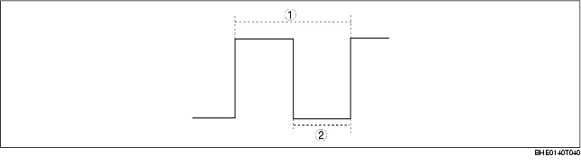

.
• The PCM increases or decreases the field coil excitation current by sending a duty signal to the power transistor built into the generator.
• The PCM changes the duty ratio of the duty signal to change the energization time of the power transistor. As a result, field coil excitation current is changed. For example, when the battery positive voltage drops, the duty ratio of the duty signal sent to the power transistor is larger, increasing the field coil excitation current.
• To maintain the optimum battery positive voltage, the PCM calculates the target generator current (target output current) and target excitation current according to the generator rotation speed at that time.
• The generator rotation speed is calculated based on the ratio between the generator pulley and eccentric shaft pulley, and the engine speed.
• The target output current is calculated from the difference obtained by comparison between present battery positive voltage and target battery positive voltage (regulated voltage), calculated based on the IAT, engine speed, and vehicle speed.
• When an electrical load is applied, power consumption increases and the battery positive voltage drops, increasing the target engine speed at idling.